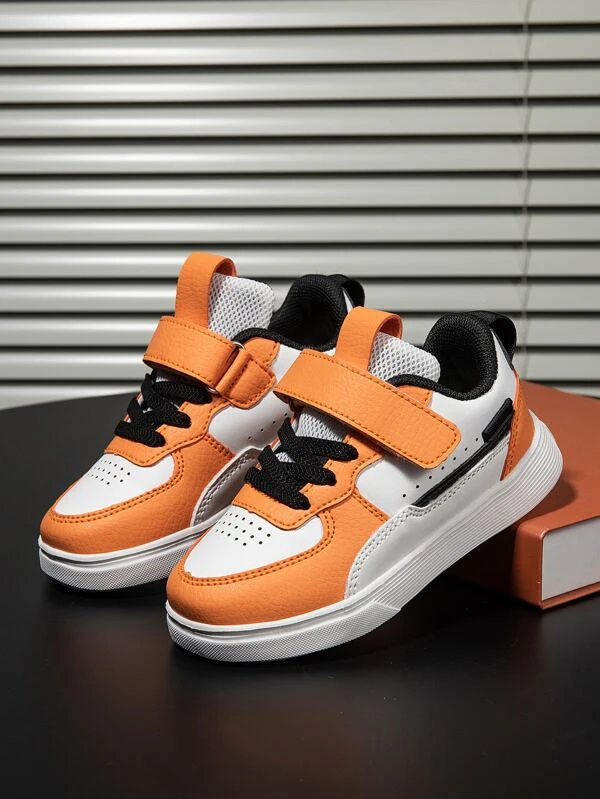
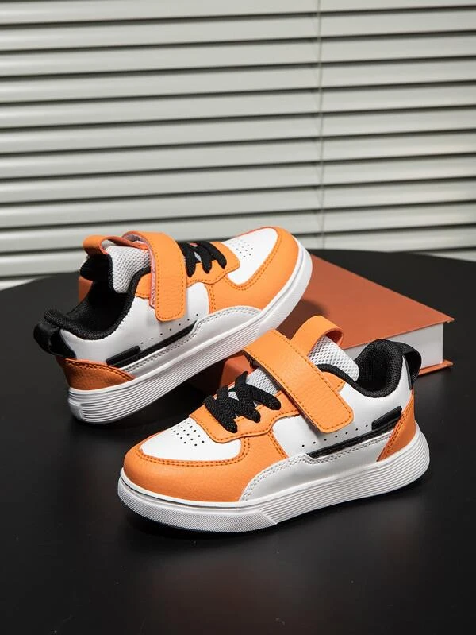
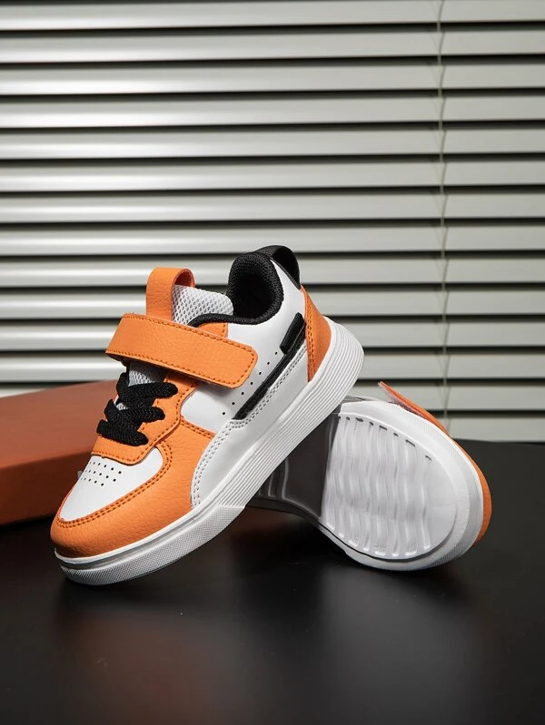
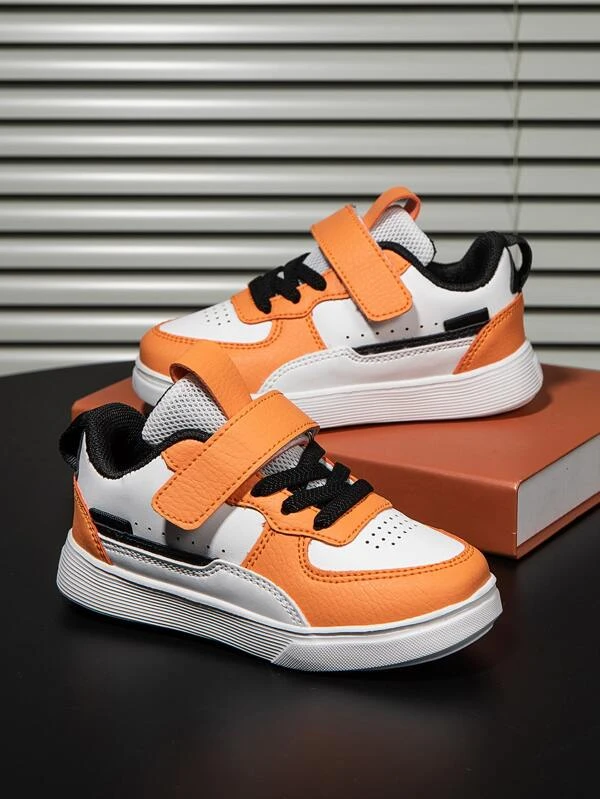

Chaussures de skateboard scratch
Ces chaussures de skate-board pour garçons sont idéales pour les amateurs de sport et de style. Elles sont fabriquées en cuir PU résistant et confortable, avec une doublure et une semelle intérieure en étoffe douce. Le bout rond offre un espace suffisant pour les orteils, tandis que les lacets assurent un bon maintien du pied. Le motif à blocs de couleur orange apporte une touche de dynamisme et de fraîcheur à ces chaussures. La semelle extérieure en EVA offre une bonne adhérence et une bonne amorti sur les surfaces glissantes ou irrégulières.